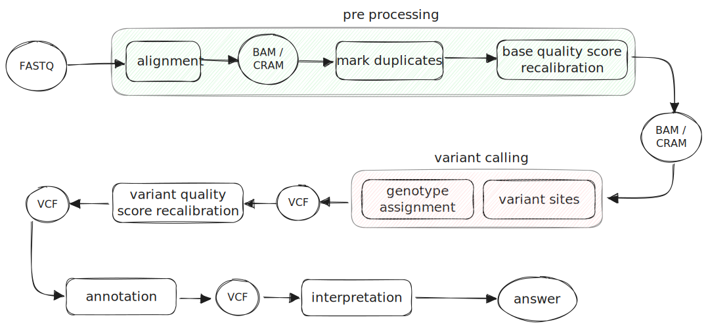
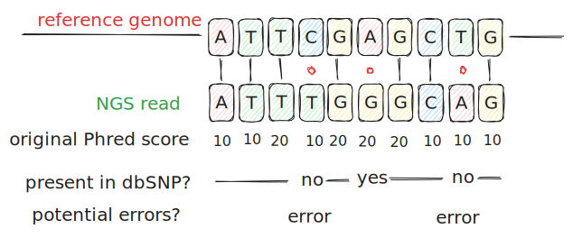

Calling Variants on Sequencing Data¶
Before we dive into one of the nf-core pipelines used for variant calling, it's worth looking at some theoretical aspects of variant calling.
Overview¶
The term "variant calling" is rooted in the history of DNA sequencing, and it indicates an approach where we identify (i.e. call) positions in a genome (loci) which are variable in a population (genetic variants). The specific genotype of an individual at that variant locus is then assigned.
There are many different approaches for calling variants from sequencing data: here, we will look more specifically at a reference-based variant calling approach, i.e. where a reference genome is needed and variant sites are identified by comparing the reads to this reference.
Over the years, also thanks to the work carried out by the GATK team at the Broad Institute, there has been a convergence on a "best practices" workflow, which is summarised in the diagram below:

In this scheme we can identify a few key phases in the workflow. Pre-processing is the first part, where raw data are handled and mapped to a genome reference, to be then transformed in order to increase the accuracy of the following analyses. Then, variant calling is carried out. This is followed by filtering and annotation. Here we will briefly discuss these key steps, which might vary depending on the specific type of data one is performing variant calling on.
Alignment¶
The alignment step is where reads obtained from genome fragments of a sample are identified as originating from a specific location in the genome.
This step is essential in a reference-based workflow, because it is the comparison of the raw data with the reference to inform us on whether a position in the genome might be variable or not.
Mismatches, insertions and deletions (INDELs) as well as duplicated regions make this step sometimes challenging: this is the reason why an appropriate aligner has to be chosen, depending on the sequencing application and data type.
Once each raw read has been aligned to the region of the genome it is most likely originating from, the sequence of all reads overlapping each locus can be used to identify potentially variable sites. Each read will support the presence of an allele identical to the reference, or a different one (alternative allele), and the variant calling algorithm will measure the weighted support for each allele.
However, the support given by the raw data to alternative variants might be biased. For this reason, one can apply certain corrections to the data to ensure the support for the alleles is assessed correctly. This is done by performing the two steps described below: marking duplicates, and recalibrating base quality scores.
Marking Duplicates¶
Duplicates are non-independent measurements of a sequence fragment.
Since DNA fragmentation is theoretically random, reads originating from different fragments provide independent information. An algorithm can use this information to assess the support for different alleles. When these measurements however are not independent, the raw data might provide a biased support towards a specific allele.
Duplicates can be caused by PCR during library preparation (library duplicates) or might occur during sequencing, when the instrument is reading the signal from different clusters (as in Illumina short read sequencing). These latter are called "optical duplicates".
A specific step called "marking duplicates" identifies these identical pairs using their orientation and 5' position (before any clipping), which will be assumed to be coming from the same input DNA template: one representative pair is then chosen based on quality scores and other criteria, while the other ones are marked. Marked reads are then ignored in the following steps.
Base Quality Score Recalibration¶
Among the parameters used by a variant calling algorithm to weigh the support for different alleles, the quality score of the base in the read at the variant locus is quite important. Sequencing instruments, however, can make systematic errors when reading the signal at each cycle, and cannot account for errors originated in PCR.
Once a read has been aligned to the reference, an appropriate algorithm can however compare the error rate estimated from the existing base quality scores, with the actual differences observed with the reference sequence (empirical quality), and perform appropriate corrections. This process is called "base quality score recalibration" (BQSR).
To calculate empirical qualities, the algorithm simply counts the number of mismatches in the observed bases. Any mismatch which does not overlap a known variant is considered an error. The empirical error rate is simply the ratio between counted errors and the total observed bases. A Yates correction is applied to this, to avoid either dividing by 0 or dealing with small counts.
The empirical error is expressed as a Quality in Phred-scale:
Let's use a simple example like the one in the diagram below, where for illustrative purposes we only consider the bases belonging to the same read.

In this example we have 3 mismatches, but one is a reported variant site: we therefore only count 2 errors, over 10 observed bases. According to the approach we just explained,
To calculate the average reported Q score, we should sum the error probabilities and then convert them back into phred scale:
Our empirical Q score would be 6.29, the average reported Q score is 11.94, and therefore the \(\Delta = 11.94 - 6.29 = 5.65\)
The recalibrated Q score of each base would correspond to the reported Q score minus this \(\Delta\).
In a real sequencing dataset, this calculation is performed for different groups (bins) of bases: those in the same lane, those with the same original quality score, per machine cycle, per sequencing context. In each bin, the difference (\(\Delta\)) between the average reported quality and the empirical quality is calculated. The recalibrated score would then be the reported score minus the sum of all deltas calculated in each bin the base belongs to.
A detailed summary of this approach can be found on the GATK BQSR page. We also found quite useful this step by step guide through the matematical approach. Full details are explained in the publication that first proposed this method.
Calling Variants¶
Once we have prepared the data for an accurate identification of the variants, we are ready to perform the next steps. The most important innovation introduced some years ago in this part of the workflow, has been to separate the identification of a variant site (i.e. variant calling itself) from the assignment of the genotype to each individual. This approach makes the computation more approachable, especially for large sample cohorts: BAM files are only accessed per-sample in the first step, while multi-sample cohort data are used together in the second step in order to increase the accuracy of genotype assignment.
Identifying Variants¶
In this phase, which is performed on each sample independently, a first step uses a sliding window to count differences compared to the reference (i.e. mismatches, INDELs) and potentially variable regions are identified. GATK calls these "active regions". Then, a local graph assembly of the reads is created to identify plausible haplotypes, which are aligned to the reference with a traditional alignment algorithm called "Smith-Waterman": this is used to identify variants. For each read in an active region, the support for each of the haplotypes is counted and a likelihood score for each combination of read/haplotype is calculated. The likelihoods at this step allow to calculate the support for each of the alleles in a variant site, and read-haplotype likelihoods are a key input for the Bayesian statistics used to determine the most likely genotype. This first genotype assignment could be sufficient if one analysed a single sample only.
Assigning Genotypes¶
When multiple samples are analysed, information from each of them could collectively improve the genotype assignment. This is because the magnitude of potential biases (example: strand bias) can be better estimated, and because the distributions of those annotations used to inform the genotype assignment become more stable when more data are available, by combining multiple samples. The use of a larger cohort also increases the sensitivity.
This is possible if the variant calling step is run by producing a variation of the VCF file format called GVCF: this format includes, in addition to variant sites, also non-variant intervals in the genome of each sample. Moreover, it reports probability likelihoods of a non-reference symbolic allele at these non-variant intervals. This information allows to re-genotype each sample by using data from the whole cohort.
You can read more on the GATK website about the logic of joint calling.
Filtering Variants¶
There are several ways to spot potential false positives through filtering.
Hard filtering uses pre-defined thresholds of different variant annotations (allele-depth, mapping quality and many others) in order to flag variants passing all these criteria, and those failing to meet any of them. This approach is mostly useful when calling a few samples and enough data are not available for more sophisticated solutions.
Soft filtering infers the thresholds to be applied from the data themselves. This approach uses the distributions of the annotations, and their overlap with known and validated variants: it defines those combinations of annotations which are more likely to describe true positives (the variants they refer to in the analysis cohort overlap with those validated in other databases). This approach is used by a GATK tool called Variant Quality Score Recalibration (VQSR).
More details can be found on the GATK VQSR page.
More recently, pre-trained deep learning models are also available to filter variants based on neural network architectures trained on a large number of variants from population databases.
Annotation¶
Once the analysis has produced a final VCF file, the final step which is necessary to interpret the results is called "annotation". This step uses different databases to describe (annotate) each variant from a genomic, biological, or population point of view. The software used to carry out this task will add information to the VCF file such as:
- the gene each variant overlaps with
- the transcript the variant overlaps with
- the potential biological consequence on each of those transcripts
- population frequency (minor allele frequency, described in different databases such as gnomAD)
And several other items we can use to interpret our findings from a biological or clinical point of view.